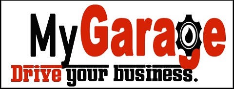

Projects
MyGarage
C#, ADO.NET, MS SQL, AWS

The final project for my Master’s degree required that I work with two other people on the full design, building, and testing of an application. While we were brainstorming for an idea, my step dad said that he wished there was a really simple light-weight application that could track auto maintenance for a small shop. I thought the idea seemed very doable, so I pitched it to the group, and we went ahead with the idea!
Since the idea came from me, I naturally took the role as the leader of the project. I set the timelines, milestones, and helped break down the total work over three iterations. On the coding side, I was responsible for connecting our application to AWS and creating some of the models, controllers, and Data Access Layer code. I was also responsible for additional form validation on each of our forms, and I did most of the QA testing.
If you’re interested in finding out more about this application check out my full code review video.
This Website
HTML5, CSS3, Javascript
mphayden.github.io
This very website is also one of my projects. Originally, it was a final assignment for one of my classes. It was meant to give us practice with HTML and CSS, and therefore, all of the code for this site was handwritten from scratch! I ended up loving the final product so much, that I decided to hang on to it. It’s went over many iterations and updates since its initial inception.
The first thing I had to do is find an alternative host since the University of West Georgia servers would only be accessible to me while I was a student. After finding out I could host it through GitHub, I felt that was a perfect fit for what I was trying to do, and from then on, I used it for both hosting and pushing my updates.
Second thing I needed to do was drastically reduce the overall size of the site. Originally, the assignment required me to use a jQuery feature. The accordion effect found on MY CAREER PAGE was originally done using the jQuery accordion. I realized that by getting rid of jQuery all together (since I was only using the one feature), I could save a lot of space by just accomplishing the same effect using my own Javascript code. That code is what is currently in use on my career page.
My website is ongoing, and I try my best to keep it updated. Check back occasionally to see what I’ve been up to!
Aloha (work in progress)
Drupal, Javascript, Batch script
The Aloha project is an educational outreach initiative run by Dr. Jim Sowell in the School of Physics at Georgia Tech. The program involves allowing school teachers to connect to a telescope located in Maui, Hawaii to show their class details of the surface of the Moon. After a meeting with Dr. Sowell, I expressed my interested in Astronomy and education, and I offered to help in anything he might let me get involved in. He described to me a problem he had been faced with which is the need to have information from his telescope sent directly to his website.
I volunteered to take on the task for him, and I’m currently working on a solution that is in the testing phase. The solution involves using a batch script to run WinSCP commands on the telescope computer, and send the information directly to the website’s server. I then have a small bit of Javascript takes several images from the all sky camera and cycles through them. The test images are currently out there, but once it’s fully done, it will play through the most recent views of the sky above Maui.